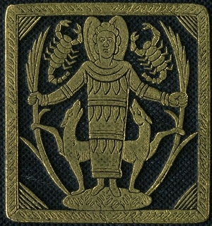

Sacred Texts Classics Plutarch
Buy this Book at Amazon.com
|  | Plutarch's Morals: Theosophical Essaystr. by Charles William King[1908] |
Originally published in 1882 as part of Bohn's Classical Library, this volume of selections from Plutarch's Moralia was translated by the 19th century scholar of Gnostics and gemstones, Charles William King. King also wrote The Gnostics and Their Remains.